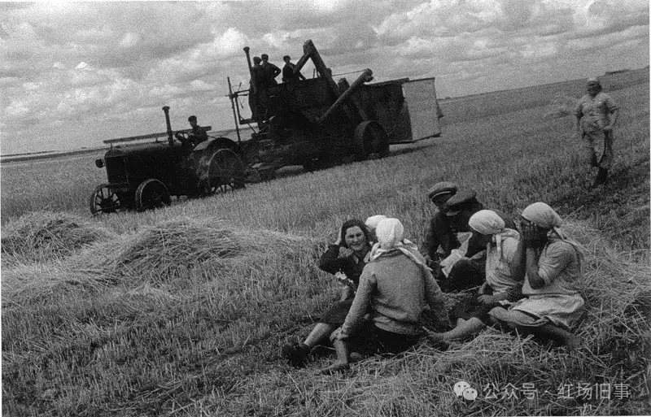
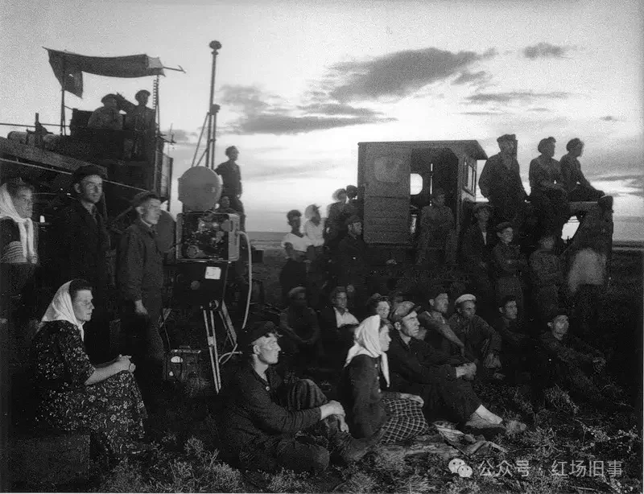

解密乌克兰大饥荒：数字背后的谎言与血泪，为苏联埋下民生死结
文字与图片版权归各自权利人所有。 查看公众号原文 ↗
1933年春天，一名苏联地方官员在报告中写道：“人们开始吃猫、狗、老鼠……甚至出现人吃人的现象。”1932年秋，乌克兰的金色麦浪下暗流涌动。国家收购队穿梭于村庄之间，征收远超合理比例的粮食，运往城市和国外，换取工业化急需的机器。与此同时，粮食的生产者——农民，却在为生存挣扎。

1920年代末，苏联领导人面临关键抉择。延续新经济政策的温和路线，还是采取激进手段加速工业化？斯大林选择了后者，农业集体化成为实现这一目标的工具。1927年，苏联工业已恢复至战前水平，但以小农经济为主的农业严重滞后，无法为快速工业化提供足够粮食和资金。联共（布）第十五次代表大会正式提出“把小农经济改造为大集体经济”的目标，一场改变数亿人命运的运动拉开序幕。最初进展缓慢，到1928年夏，仅有1.7%的农户加入集体农庄。斯大林对此极为不满，决定采取强制手段推动这一进程。
02 强制实施1929年，苏联全面启动“全盘集体化”运动。政府废除土地租佃和雇佣劳动相关法律，决定没收富农财产，将其转交集体农庄。富农本人则被逮捕、流放至西伯利亚等边远地区。“富农”这一标签成为打击工具。据估计，1930年至1931年间，约500万富农被消灭。许多中等收入农民也被划为富农，失去全部财产。集体化推行过程中，干部采用粗暴的行政手段强迫农民加入。一些地方甚至跳过过渡形式，直接建立“农业公社”，将农民的住宅、小牲畜和家禽全部收归公有。这种激进做法引发农民强烈不满和抵制。
03 乌克兰悲剧农业集体化引发的饥荒在全苏联蔓延，但以“欧洲粮仓”乌克兰最为惨烈。乌克兰农民相对富裕，对集体化抵抗也最强烈，因此承受了不成比例的镇压和粮食征收压力。1932年，乌克兰粮食产量较往年大幅下降，但国家征收指标却不降反升。为换取外汇购买工业设备，苏联大幅增加粮食出口，其中大部分来自乌克兰：1930年：乌克兰产粮2230万吨，国家征收770万吨（占35%）1931年：产量降至1380万吨，征收量仍达725万吨（占53%）1932年8月，苏联颁布被称为“五穗法”的严酷法令：盗窃集体农庄财物可判处死刑。至1933年1月，已有7.9万农民因此被捕，其中4880人被处决。
04 饥荒真相关于乌克兰大饥荒的死亡人数，不同研究提供不同数据：美国与乌克兰联合研究：1932-1933年直接死亡390万人，加上60万未出生儿童，总损失达450万乌克兰方面估计：死亡人数可能高达1000万，占当时乌克兰总人口的25%国际认可数据：至少500万人因饥饿死亡“饥饿种族灭绝”（Holodomor）是乌克兰语中对这场饥荒的称呼。2006年，乌克兰法律正式认定其为对乌克兰人民的种族灭绝，目前已有16个国家予以承认。然而，俄罗斯作为苏联的主要继承者，拒绝承认这一认定，辩称饥荒影响了许多地区，并非针对特定民族。
05 深远代价到1937年，苏联宣布93%的农户加入集体农庄，耕地集体化比例达99.1%，但农业生产却长期未能恢复：农业生产效率持续低下农民生产积极性严重受挫粮食产量多年未能达到沙俄时期最好水平集体农庄制度设计存在根本缺陷：农民与土地和收成脱节，缺乏激励机制；管理僵化，无法适应农业生产的灵活性需求；过度强调粮食征收，忽视农业可持续发展。苏联农业从此陷入长期停滞，直到解体前都未能真正解决粮食问题。这一失败为苏联最终解体埋下了隐患。

斯大林在1933年宣称：“集体农庄已经最终地永远地取得了胜利。”然而，这种“胜利”建立在数百万生命消失和农业长期衰退的基础上。乌克兰大饥荒成为20世纪最严重的人道灾难之一，也是集体化运动最黑暗的遗产。当最后一个抵抗村庄沉寂下来，苏联农村完成了向国家粮食供应基地的转变，但这片土地的创伤，几十年都未能愈合。